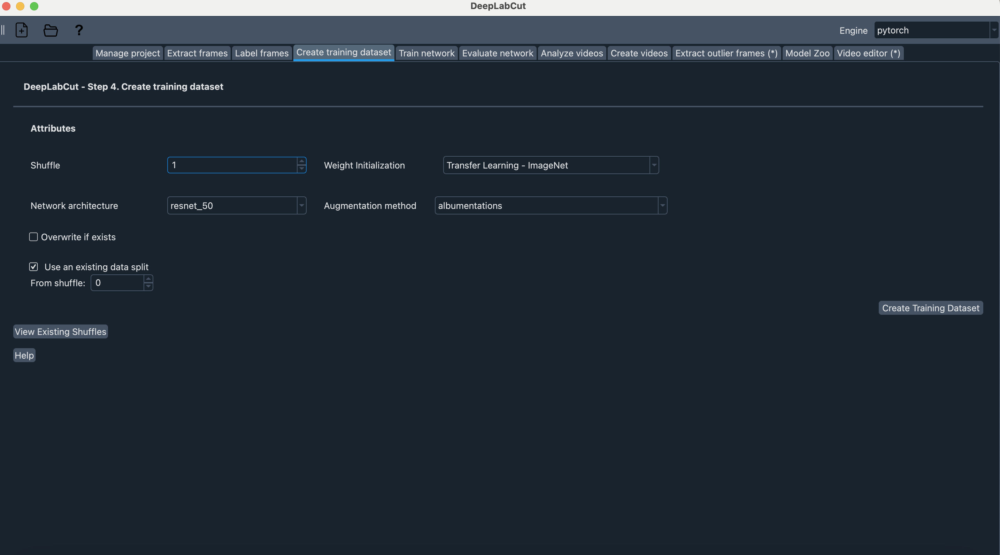
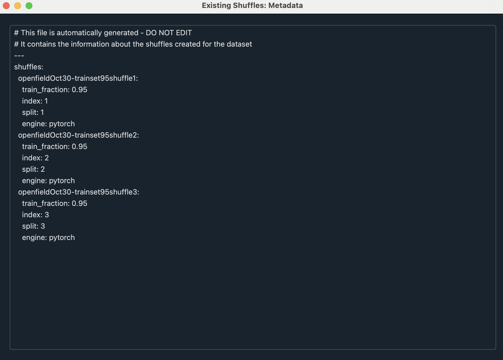

DeepLabCut Benchmarking - User Guide#
Reasoning for benchmarking models in DLC (across DLC versions and architectures)#
DeepLabCut 3.0+ introduced using PyTorch 🔥 as a deep learning engine (and TensorFlow will be depreciated). It is of importance for replicability of data analysis to benchmark existing models created using DeepLabCut versions prior to 3.0 against new models created in DeepLabCut 3.0+ and later versions.
When comparing different models, it’s important to use the same train-test data split to ensure fair comparisons. If the models are trained on different datasets, their performance metrics can’t be accurately compared. This is crucial when comparing the performance of models with different architectures or different sets of hyperparameters. For example, if we compare the RMSE of a model on an “easy” test image with the RMSE of another model on a “hard” test image, it doesn’t determine whether a model is better than the other because the architecture performs better or because the training images were “better” to learn from. Thus, we not only need to compare the models based on metrics computed on the same test images, but also train them on an identical fixed training set in order to “decouple” the dataset from the model architecture.
Creating a model using the same data split can be carried out using a GUI or using code, and this guide outlines the steps for both.
Important files & folders#
dlc-project
|
|___dlc-models-pytorch
| |__ iterationX
| |__ shuffleX
| |__ pytorch_config.yaml
|
|___training-datasets
| |__ metadata.yaml
|
|___config.yaml
Benchmarking a TensorFlow model against a PyTorch model#
Creating a shuffle#
Creating a new shuffle with the same train/test split as an existing one:
In the DeepLabCut GUI#
Front page > Load project > Open project folder > choose config.yaml
Select ‘Create training dataset’ tab
Tick Use an existing data split option

Click ‘View existing shuffles’:
This is used to view the indices of shuffles created for a project to determine which index is available to assign to a new shuffle.
The elements described in this window are:
train_fraction: The fraction of the dataset used for training.
index: The index of the shuffle.
split: The data split for the shuffle. The integer value on its own does not hold any meaning, but this “split” value indicates which shuffles have the same split (as their results can then be compared)
engine: Whether it is a PyTorch or TensorFlow shuffle

Choose the index of the training shuffle to replicate. Let us assume we want to replicate the train-test split from OpenfieldOct30-trainset95shuffle3, in which
split: 3. In this case, we insert in the ‘From shuffle’ menu
To create this new dataset, set the shuffle option to an un-used shuffle (here 4)

Click ‘Create training dataset’ and move on to ‘train network’. Shuffle should be set to the new shuffle entered at the previous step (in this case, 4)

To view/edit the specifications of the model you created, you can go to
pytoch_config.yamlfile at:dlc-project | |___ dlc-models-pytorch |__ iterationX |__ shuffleX |__ pytorch_config.yaml
In Code#
With the deeplabcut module in Python, use the
create_training_dataset_from_existing_split() method to create new shuffles from
existing ones (e.g. TensorFlow shuffles).
Similarly, here, we create a new shuffle ‘4’ from the existing shuffle ‘3’.
import deeplabcut
from deeplabcut.core.engine import Engine
config = "path/to/project/config.yaml"
training_dataset = deeplabcut.create_training_dataset_from_existing_split(
config=config,
from_shuffle=3,
from_trainsetindex=0,
shuffles=[4],
net_type="resnet_50",
)
We can then train our new PyTorch model with the same data split as the TensorFlow model.
deeplabcut.train_network(config, shuffle=4, engine=Engine.PYTORCH, batch_size=8)
Once trained we can evaluate our model using
deeplabcut.evaluate_network(config, Shuffles=[4], snapshotindex="all")
Now, we can compare performances with peace of mind!
Good practices: naming shuffles created from existing ones#
In a setting where one has multiple TensorFlow models and intends to benchmark their performances against new PyTorch models, it is good practice to follow a naming pattern for the shuffles we create.
Say we have TensorFlow shuffles 0, 1, and 2. We can create new PyTorch shuffles from them by naming them 1000, 1001, and 1002. This allows us to quickly recognize that the shuffles belonging to the 100x range are PyTorch shuffles and that shuffle 1001, for example, has the same data split as TensorFlow shuffle 1. This way, the comparison can be more straightforward and guaranteed to be correct!
This was contributed by the 2024 DLC AI Residents!